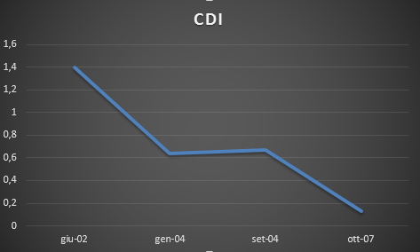

Analisi di Manutenibilità
La manutenibilità di un sistema si compone di quattro sottocaratteristiche:
- Analizzabilità;
- Modificabilità;
- Stabilità;
- Testabilità.

- CBO (Coupling Between Object Classes):accoppiamento tra le classi di oggetti;
- NOM (Number of Method): numero medio di metodi in una classe;
- NOC (Number of Class): numero di sottoclassi che dipendono immediatamente da una classe di una gerarchia;
- LCOM (Lock of Coesione Method): misura il numero di metodi che accedono a uno o più variabili di istanza in comune a una classe;
- DIT (Depth of Inheritance): misura la profondità dell'albero di ereditarietà.

Analizzabilità
L'analizzabilità rappresenta la facilità con la quale è possibile analizzare il codice per localizzare un errore nello stesso.

Modificabilità
La modificabilità rappresenta la capacità del prodotto software di permettere l'implementazione di una specificata modifica (sostituzioni componenti).

Stabilità
LA stabilità rappresenta la capacità del software di evitare effetti inaspettati derivanti da modifiche errate.

Testabilità
La testabilità rappresenta la capacità di essere facilmente testato per validare le modifiche apportate al software.

Manutenibilità

Conclusioni
Di seguito vengono riportati gli istogrammi relativi alle sottocaratteristiche della manutenibilità.

I valori più bassi delle sottocaratteristiche della manutenibilità si evidenziano nella seconda e terza release del sistema, nelle quali si è verificato l'aggiunta delle maggiori funzionalità supportate dal sistema. Tali funzionalità fanno riferimento all'implementazione dei moduli relativi l'interfaccia grafica, il retrace e l'ottimizzazione del bytecode. A partire dalla quarta release del sistema sono stati effettuati molteplici interventi di refactoring e manutenzione preventiva. Tali interventi giustificano l'aumento dei valori di stabilità e manutenibilità del sistema. Ulteriori interventi si sono verificati al rilascio della quinta release del sistema, in cui è stato compiuto un maggiore sforzo di reingegnerizzazione.
Approfondimento: evoluzione dell'architettura
In aggiunta all'analisi architetturale delle singole versioni del sistema software è stata analizzata l'evoluzione del sistema focalizzando l'attenzione sui cambiamenti nei packages e sulle loro interazioni. In particolare, è stata considerata la metrica archietturale: CDI (Core Design Instability), la quale valuta i cambiamenti eseguiti nei packages quando l'architettura core del sistema evolve. Valori bassi di tale metrica implicano l'introduzione di pochi cambiamenti tra una release N e una release N+1.
In accordo con lo studio condotto in "Lerina Aversano, Marco Molfetta, and Maria Tortorella. Evaluating Architecture Stability of Software Projects" il CDI è stato calcolato nel seguente modo:
CDI = (b + c) / m
dove:
- m: numero dei packages presenti nell'extended core di una release N;
- b: numero di nuovi packages aggiunti all'extended core della release N+1;
- c: numero di nuovi packages aggiunti all'extended core della release N che non sono presenti nella release N+1;
Per poter calcolare i parametri della formula bisogna definire dapprima l'extended core di una release: l'extended core è composto da quei packages che producono almento il 20% del totale delle interazioni tra packages. La metrica utilizzata per valutare le interazioni è il FAN-IN di un package.

I risulatati ottenuti confermano lo studio preliminare svolto sull'architettura del software, in quanto dal grafico si evidenzia che l'aggiunta di maggiori funzionalità si verifica nel passaggio tra la seconda e terza release. L'archittetura del sistema si stabilizza tra la quarta e quinta release perchè l'attenzione si è focalizzata sull'attività di reingegnerizzazione del sistema.